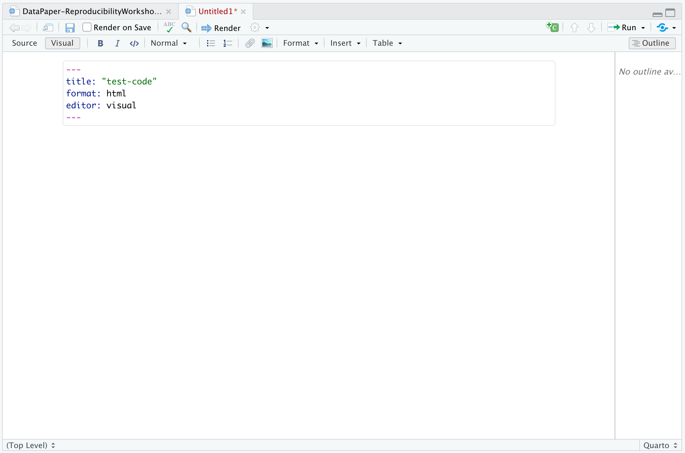

Adding Code-Generated Plots and Figures
Overview
Teaching: 50 min
Exercises: 20 minQuestions
What is Knitr?
What are code chunks and how they are structured?
How can you run code from your Quarto document?
What are global knitr options?
What are global execution options?
Objectives
Understand the syntax of a code chunk.
Learn how to insert run-able chunks of code to integrate into your report
Learn how to source external scripts to run within an Quarto document.
Learn about using global knitr options and global execution options
Utilizing the Code Features of Quarto
We’ve learned about the text-formatting options of Quarto, now let’s dive into the code portion of Quarto documents. Quarto flips the defaults of code and text - instead of priortizing the code and making you comment out (#) text such as in R scripts, they priortize text and force you to specially comment the code portions. How do you signal to R the difference between code and text when you’re not using code commments (#)? That’s where code chunks (or “code chunks” as RStudio calls them) come into play. Instead of Quarto’s rendering system processing the markdown styling into the final output, Code chunks are sent to a preceding stage of processing by Knitr, which “knits”/render the code output and text together. Secondly, Quarto processes the code output and displays it in the document format of our choice - i.e. Knitr runs the lines of code for a plot in a code chunk, joins it to the markdown text portions, and Quarto outputs that as an html document.
What is Knitr?
But what is Knitr? Knitr is the engine in RStudio which creates the “dynamic” part of Quarto reports. It’s specifically a package that allows the integration of R code into the html, word, pdf, or LaTex document you have specified as your output for Quarto. It utilizes Literate Programming to make research more reproducible. There are two main ways to process code with Knitr in Quarto documents:
- Code Chunks
- Inline Code
First, we’re going to talk about code chunks for including substantial portions of code into our narrative such as to generate figures and plots. There are a plethora of options that become available to us when using code chunks so this tends to be the more complex part of Quarto documents. Now, sometimes you just need to do a quick calculation - like a count of total observations in your data or the mean of one of your variables. In those cases, it may not be worth setting up a code chunk to calculate those values, so after code chunks we will see how to add inline code - which allows one to add a quick line of code or single function to be executing within the text portion of the document. But let’s start with code chunks.
Inserting Code Chunks
Code chunks (also called “code blocks”) are the preferred option when you need to do something more sophisticated with your code than inline code, such as building plots or tables. They also incorporate syntax which allows modifications to how that code is rendered and styled in your final output. We’ll learn more about that as we walk through the “anatomy” of a code chunk.
Start a new .qmd File
First, though, let’s open a new .qmd document to get a look at how code chunk work before integrating them into our paper.
Again, open a new document by navigating to File > New File > Quarto Document. Add the title test-code.
Let’s first delete the generic text because we don’t need it at this point (all except the first code chunk that is - we’ll get back to that in a second).

Basic Anatomy of a Code Chunk
You can quickly insert chunks like these into your file with:
- the keyboard shortcut Ctrl + Alt + I (OS X: Cmd + Option + I)
- the Add Chunk command in the editor toolbar
- or by typing the code chunk delimiters {r} and ```.
The most basic (empty) code chunk looks like so:

Other than backticks ``` for code chunks that surround the code top and bottom, the only required piece is the specified language (r) placed between the curly brackets. This indicates that the language to read the code is R.
Let’s all start a new code chunk by typing our our starting backticks & r between curly brackets. (in your own workflow you may want to add the ending three backticks as well so you don’t forget after adding your code - it’s a common mistake):
Fun fact: Other Programming Languages
Although we will (mostly) be using R in this workshop, it’s possible to use other programming or markup languages. For example, we have seen that we can use LaTeX code for equations. You can also use python and a handful of other languages, so if R is not your preferred programming, but you like working in the RStudio environment, don’t despair! Other options for languages include: sql, julia, bash, and c, etc. It should be noted however, that some languages (like python) will require installing and loading additional packages.
Add a Code Chunk
Ok, let’s add some code! There are already some plots included in our code but as static images. Now, we will add some additional plots, but generated straight from R code - which are also more reproducible and easier to update than static images. Using code to generated images directly assures us that if there are any changes to the data or code the plots will update automatically. We also don’t have to generate the new plots, save them as images, and then add them back in to our paper. Not only is this a time-saver, but it helps to prevent version errors as well!
Now, let’s open our 03_HR_analysis.R script in our code folder. We will insert the code of this script into our current working file. To do this, copy the code and paste it in-between the two lines with backticks and {r}.

Tip:
There’s actually a button you can use in the RStudio menu to generate the code chunks automatically. Automatic code chunk generation is available for several other languages as well. Also, you can use the keyboard shortcut
ctrl+alt+ifor Windows andcommand+option+ifor Mac.

Run the code in a code chunk
Now, to check to make sure our code renders, we could click the “Render” button as we have been doing to check on the output of our Quarto file. However, with code chunks we have other options for running and debugging code that don’t require us to wait for the file to render.
1) Run from code chunk (green play button on the right top corner). This allows us to run one specific code chunk.

2) Run menu - this gives more options for running code chunks (chunks) including the current one, the next one, all chunks, etc.

3) Keyboard shortcuts:
| Task | Windows & Linux | macOS |
|---|---|---|
| Create a code chunk | Ctrl + Alt + I | Cmd + Option + I |
| Run all chunks above | Ctrl+Alt+P | Command+Option+P |
| Run current chunk | Ctrl+Alt+C | Command+Option+C |
| Run current chunk | Ctrl+Shift+Enter | Command+Shift+Enter |
| Run next chunk | Ctrl+Alt+N | Command+Option+N |
| Run all chunks | Ctrl+Alt+R | Command+Option+R |
| Go to next chunk/title | Ctrl+PgDown | Command+PgDown |
| Go to previous chunk/title | Ctrl+PgUp | Command+PgUp |
Run your code with one of the given methods.
Did it work? Look under the code chunk. You should now see a plot preview displayed beneath the code chunk if all went well.

Rendering Code Chunks
We just saw how to run our code in our code chunks to see a preview of the code output that will render in our html document but to actually render it we need to use the Render button. Using the Render button with code chunks is a two step process - first the code is run (all code chunks will run automatically). Second, (if there are no code errors) the document of choice will render for our whole Quarto document.
Time to Render!
Now, let’s Render the Quarto file and see how our code output looks in the final html page.

Wait… what’s all that output in our document? We don’t want that in our paper!

This happens because the output from running code (messages, results, warnings, etc.) get’s added to the Quarto document instead of being printed to the console. Let’s see about adjusting the output to make it look better with code chunk rendering options.
Code Chunk Options
There are over 50 different code chunk options!!! Obviously we will not go over all of them, but they fall into several larger categories including: code evaluation, text output, code style, cache options, plot output and animation. We’ll talk about a few options for code evaluation, text output and plot output specifically.
Code chunk options in Quarto are added within code chunks and always have the following format:
#| option: option-text
Common code chunk options:
include = (logical) whether to include the chunk output in the output document (defaults to TRUE).
eval = (logical or numeric) TRUE/FALSE to evaluate (or not) or a numeric value like c(1,3) (only evaluate expressions 1 and 3).
echo = (logical or numeric - following the same rules as above) whether to display source code or not.
results = (logical or character) text output of the code can be hidden (hide or FALSE), or delineated in a certain way (default ‘markup’).
warning = (logical) whether to display the warnings in the output (default TRUE). FALSE will output warnings to the console only.
message = (logical) whether or not to display messages that appear when running the code (default TRUE).
Using code chunk options for clean Quarto Documents
Ok, let’s use some of the options above to improve the look of our Quarto document. Add the following options one-by-one to see how they change your output (click Render after each option you add):
- echo: false
- message: false
- warning: false
- results: false
These options mean the source code will not be printed in the rendered html document, messages from the code will not be printed in the rendered html document, and warnings will not be printed in the html document (but will still output to the console). Plots, figures or whatever is printed by the code WILL show up in the final html document.
Now we are seeing what we would like: a figure without other output to show in our paper.
CHALLENGE 7.1 - Rendering Codes (optional)
How will some hypothetical code render given the following options?
{r} #| label: global-chunk-challenge #| eval = true #| include = falseSOLUTION
The expressions in the code chunk will be evaluated, but the outputed figures/plots will not be included in the rendered document.
When might you want to use this?
If you need to calculate some value or do something on your dataset for a further calucation or plot, but the output is not important to be included in your paper narrative.
Tip:
Find a complete list of code chunk options on Knitr developer, Yihui Xie’s, online guide to knitr.
Label Your Code Chunk
Before we get to fixing how our code output looks, let’s pause a second and give our code chunk a label. While not required for running your code, it is good practice is to give a name to each code chunk because a label is an unique identifier which allows for more advanced options (such as cross-referencing) to work with your qmd files later on:

Some things to keep in mind
- The chunk label syntax is always
#| label: chunk-labelwithchunk-labelreplaced with your own text - The chunk label has to be unique (i.e. you can’t use the the same name for multiple chunks)
We’ll see in a bit where this code chunk label comes in handy. But, for now let’s go back and give our first code chunk a name:
#| label: fig3-heartrate
Tip: Don’t use spaces, periods or underscores in code chunk labels
Avoid spaces, periods
(.), and underscores(_)in chunk labels and paths. If you need separators, you are recommended to use hyphens(-)instead. For example, setup-options is a good label, whereas setup.options and chunk 1 are bad; fig.path = ‘figures/mcmc-‘ is a good path for figure output, and fig.path = ‘markov chain/monte carlo’ is bad. See more at: https://yihui.org/knitr/options/
Caption your code chunk output:
The options we just looked at focus on code evaluation and text output. However, we have another set of options that deal with how plot or figure outputs look at act. Many of the options start with fig. The one we will use today allows us to add a caption to our figure. Again, this is an optional feature, but if you need (or want) to add captions to your publication, it is straightforward to do in code chunks.
The caption information also resides at the top of a code chunk using the #| syntax as such:
#| fig.cap: "Figure Caption Here"
Don’t forget to put the caption within quotes "".
CHALLENGE 7.2: Add a caption to Figure 3
Let’s add a caption to our heartrate figure. Add the caption:
“Fig 3: Mean heart rate of stress and control groups at baseline and during intervention.”
SOLUTION
so, you should end up with the following in your code chunk:
{r} #| label: fig3-heartrate #| echo: false #| message: false #| warning: false #| results: false #| fig.cap: "Fig 3: Mean heart rate of stress and control groups at baseline and during intervention."Set the option
fig.capto equal the text in double quotes.
More plot/figure options
Other options that change how a plot or figure appears often use the sytax
fig.xxxsimilar tofig.capSome other useful plot/figure code options include (From Yihui Xie’s page ):
fig.width,fig.height: (both are 7; numeric) Width and height of the plot (in inches), to be used in the graphics device.out.width,out.height: (NULL; character) Width and height of the plot in the output document, which can be different with its physical fig.width and fig.height, i.e., plots can be scaled in the output document.fig.align: (‘default’; character) Alignment of figures in the output document. Possible values are default, left, right, and center. The default is not to make any alignment adjustments.fig.link: (NULL; character) A link to be added onto the figure.fig.alt: (NULL; character) The alternative text to be used in the alt attribute of thetags of figures in HTML output. By default, the chunk option fig.cap will be used as the alternative text if provided.
Let’s render one more time to see if our figure outputs how we’d like and has a caption.
Time to Render!
Let’s try that again
Add the code to our Paper
We tested the code for our heart rate plot in a new qmd document to save time on rendering while we experimented with it (for our paper it can take 1-2 min to render and that adds up!). Now let’s add the code into our paper document. Navigate to Example 8 and create a new code chunk. Copy and paste the code from the test document into the paper. Go ahead and run the code to make sure it works.
Well shoot! We’re getting an error:

If we go to the bottom of the code chunk we’ll see more details on the error:

This is a path error. The reason we’re seeing this is that our paper is located in the report directory while our test document was automatically created in the project root directory. The path from the report directory to the data we’re trying to read is not correct any longer.
We can fix this by adding the correct relative path:
df <- read_csv("../output/data/preprocessed-GARP-TSST-data.csv")
Instead of:
df <- read_csv("output/data/preprocessed-GARP-TSST-data.csv")
Run the code again to make sure it works properly. Great! Let’s move on to inline code.
Inline Code
What if you only need to make a quick calculation and adding a code chunk seems a little overkill?
You can directly include code into the text portion of your document with inline code, for example:
There are ` r sum(1:14) ` cats in the neighbourhood
We’ve had to put an extra space between the backticks ` and the code to prevent it from rendering so you can understand how to write inline code. You can copy that line into the test-code.qmd document then remove the spaces. If we render the test-code.qmd document, what change do we see?
Say you are discussing some of the summary statistics in your manuscript, Quarto makes this possible through HTML/LaTeX inline code which allows you to calculate simple expressions integrated to your narrative. Inline code enables you to insert r code into your document to dynamically updated portions of your text. In other words, if your data set changes for any reason the code will automatically update the calculation specified.
This can be helpful when referring to specific variables on your data. For example, you should include numbers that are derived from the data as code not as numbers. Thus, rather than writing “The CSV file contains choice consistency data for 10.000 simulated participants” (Example 7) , replace the static number with a bit of code that, when evaluated, gives you a dynamic number if anything changes on your dataset. Note that there is not an insert option to do this from the menu in the visual editor, so we need to insert inline code manually with r, for example:
The CSV file contains choice consistency data for r nrow(bronars_simulation_data) simulated participants.
When you render you might get an error. Any idea why? That is because we need to make sure to import the dataset we are referring to before the inline code can work. Let’s add the following to our chunk at the beginning of the document where we loaded our other data:
bronars_simulation_data <- read_csv("data/bronars_simulation_data.csv")
Time to Render!
If you update your dataset this value will match the number of rows.
CHALLENGE 7.3 - Adding inline code
Suppose we would like to add some information to the sentence we have just adjusted in our manuscript. We would like to include the average for the variable violation_count present in the same dataset. Which inline code we would have to add to following sentence?
The CSV file contains choice consistency data for `
r nrow(bronars_simulation_data.csv)` simulated participants, that have been used to determine the power of our food-choice task design to detect choice consistency violations, which averaged `enter inline code here`. What inline code would you enter? What number would replace the inline code?Tip: we will need to use a
dataset$variablesyntax!Solution:
`
r mean(bronars_simulation_data$violation_count)` 5.3924
Important Note:
Make sure the file you are calling is in the right subdirectory and your working directory is set appropriately.
More on inline codes:
Quarto will always display the results of inline code, but not the code. Inline expressions do not take knitr options.
Time to Commit!
Now, let’s commit the changes you have made.
Key Points
Knitr will render your code and markdown-formatted text and output your document format of choice
Code chunks are runable piece of R code. Each time you render/knit the document, calculations and plots will be run and displayed
Options for code chunks can be set at the individual level or at the global level